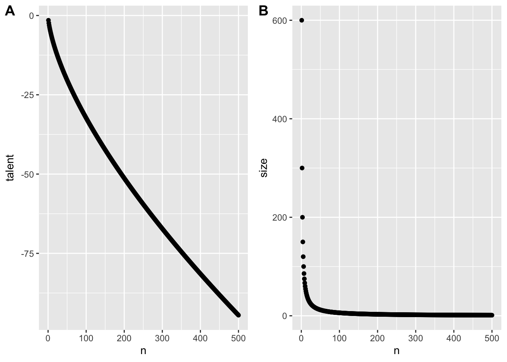

library(tidyverse)Matching theory
Understanding a theory through Maths and Simulations
Introduction
A good research project relies on strong theoretical foundation. Theories are a summary of prior research findings and present predictions you can test. In accounting and finance, a lot of theories are mathematical theories. Sometimes, research articles will give a good explanation of the arguments in a theory but sometimes you will have to put in some extra effort to understand the theory. In this section, I will give you two techniques that can help to understand the theory better. The first is making the theory simpler and less general and redo the derivations. The second is to simulate data based on the theory and to visualise the theory with plots. Computers are very good at doing calculations. Whenever possible, you should let computers do the work for you. Simulate and visualise is a technique, we will use a lot more in the rest of the notes.
New theory: CEO-firm matching.
Let us introduce a new theory how the size of the company is related to the compensation of the CEO. In the first lecture I presented a basic model where talented CEOs hire more people and attract more capital and thus grow the company. This theory ignored that companies and CEOs can choose to work with each other. In this section, we introduce a new theory about matching firms and CEOs Tervio (2008).
The theory assumes that the increase in \(V\)alue of a firm from time \(0\) to time \(1\) is given by the following equation.
\[ V_1(n) - V_0(n) = C V_0(n) T(m) \tag{1}\]
The increase in value depends on the \(T\)alent of the CEO, the inital \(V\)alue of the firm, and a scaling factor \(C\). 1 \(n\) is the rank of the size of the firm and \(m\) is the rank of the talent of the CEO. \(n = 1\) is the largest firm, \(m = 1\) is the most talented CEO. The question the theory is trying to answer which CEO, \(m\), is going to work for firm, \(n\).
The theory assumes that firms will make a decision about which CEO to hire and CEOs will only accept to work for a firm if they cannot do better in another firm. The firms have to compensate a manager with a \(w\)age and will maximise the residual value of the firm, \(V_1(n) - V_0(n) - w(m)\). The model assumes that the managers will need a compensation above \(w_0\).
Tervio (2008) and Edmans and Gabaix (2016) show that when \(m = n\), no firm or CEO can improve themselves by switching. This means that the most talented CEO works for the largest firm, the second most talented CEO works for the second largest firm, until we reach the least talented CEO and the smallest firm. The intuition is that CEOs have a larger impact in larger firms. 2 Therefor, most value is created when the largest firms are managed by the best CEOs. The difficulty is to determine how much each firm should pay the CEO. I first go over a simplified mathematical model that gets some of the intuition across, then I explain how you can simulate from the more complicated model
Three firms - three CEOs model
Let us assume that there are only three CEOs and only three firms. In equilibrium, we want to make sure that the largest firm (\(n=1\)) cannot do better than hiring the most talented CEO (\(m=1\)). In other words, the performance of the most talented CEO after paying their compensation, should be higher than the residual performance of the other two CEOs.
\[ \begin{aligned} CV_0(1) T(1) - w(1) \geq CV_0(1) T(2) - w(2) \\ CV_0(1) T(1) - w(1) \geq CV_0(1) T(3) - w(3) \end{aligned} \tag{2}\]
Next, the second largest firm has to be better off hiring the the second best CEO.
\[ CV_0(2) T(2) - w(2) \geq CV_0(2) T(3) - w(3) \tag{3}\]
If we add the first condition of Equation 2 to condition Equation 3. We can rewrite everything and get the second condition of (Equation 2).
\[ \begin{align*} CV_0(1) T(1) - w(1) + CV_0(2) T(2) - {\color{blue}{w(2)}} \geq CV_0(1) T(2) - {\color{blue}{w(2)}} + CV_0(2) T(3) - w(3) \\ CV_0(1) T(1) - w(1) \geq C(V_0(1) - V_0(2))T(2) + C(V_0(2) - {\color{blue}{V_0(1)}})T(3) + {\color{blue}{CV_0(1)T(3)}}- w(3) \\ CV_0(1) T(1) - w(1) \geq {\color{blue} {C(V_0(1) - V_0(2))(T(2) - T(3))}} + CV_0(1)T(3) - w(3) \end{align*} \]
Because \(V_0(1) > V_0(2)\) and \(T_0(2) > T_0(3)\), we can delete the first term on the right hand side. So, the two inequalities give us the third inequality for free.
Because firms will prefer to paying a lower compensation than more compensation, firms pay their CEO just enough so that smaller firms are not willing to pay the same amount of money to poach the CEO away. For each firm, we have to make sure that the advantage of having a more talented CEO is smaller than the extra wage of hiring the CEO.
\[ \begin{align*} CV_0(2) (T(1) - T(2)) \geq w(1) - w(2) \\ CV_0(3) (T(2) - T(3)) \geq w(2) - w(3) \end{align*} \]
Because firm \(n=1\) and \(2\) will set the wage just high enough to make sure that a smaller firm does not poach their CEO, they will set the compensation \(w(1)\) and \(w(2)\) just high enough but not higher. We can simplify the resulting conditions than to equalities.
\[ \begin{aligned} CV_0(2) (T(1) - T(2)) + w(2) &= w(1) \\ CV_0(3) (T(2) - T(3)) + w(3) &= w(2) \end{aligned} \tag{4}\]
The deriviations are a bit tedious and I do not necessarily want you to be able to do this entirely on your own. However, it shows that with some small calculations and with some economic intuition about what we want to calculate, we can again derive the relation between firm value and CEO compensation.
N firms - N CEOs model
If the literature points you to a mathematical model and you want to understand it better. Breaking it down to a simpler model with only 2 or 3 firms can be very illuminating. I hope the three firm model helped you to get some of the intuition behind the model without resorting to too complicated maths. It is relatively easy to see that we can write the inequalities in Equation 4 in a more general form.
\[ CV_0(n + 1) (T(n) - T(n+1)) + w(n + 1) = w(n) \\ \forall n = 1,.., N-1 \tag{5}\]
The basic idea is that a larger firm will pay more for a CEO than a smaller firm. If the larger firm wants to make sure that a the more talented CEO works for them, they need to pay the CEO a high enough wage. The difference between the two wages for a talented CEO will be the surplus that the CEO would create in the smaller firm. So the smaller firm will not be willing to poach the more talented CEO because the costs (higher wage) would outweight the benefit (higher surplus).
The original papers go further with the derivations Tervio (2008). However, this is an algorithm we can give to R when we add some further assumptions. So instead of going over all the math, we are going to simulate wages and firm values based on the algorithm.
The original theoretical papers also need the extra assumptions. The goal of the simulation is to show that sometimes you do not need all the fancy maths when you can write a computer program to do the work for you. We will use similar assumptions as the original papers but implement them in an R program.
Simulation
First, let us load the tidyverse package.
Next, we simulate data for obs=500 observations. size_rate is a parameter that controls the size of firms. A value of 1 means that firms have constant returns to size, the same assumption as in lecture 1. talent_rate is something similar for the Talent of the CEOs. A larger number for both rate parameters implies that differences between sizes or CEOs become larger at the top. C is the \(C\) constant in the model. scale is an additional parameter that helps me scale the size of the firms so that I get similar numbers as the real data. 3 w0 is the base wage for the least talented CEO.
obs <- 500
size_rate <- 1; talent_rate <- 2/3;
C <- 10; scale <- 600; w0 <- 0;
n <- c(1:obs)
size <- scale * n ^ (-size_rate)
talent <- - 1/talent_rate * n ^ (talent_rate)n is an R vector of length obs (i.e. 500) with values from 1 to obs. So it is the rank in size and talent for each firm and CEO. You can see what n look like by just typing n and enter in the R console.
Size and talent follow an exponential distribution which has some theoretical motivation given in Tervio (2008) and Edmans and Gabaix (2016). If that interests you, please go have a look but it goes beyond what we need today. What we do is give a value for the size of each firm from 1 to 500 and for the talent of each CEO from 1 to 500.
We can also calculate the wage of each CEO-firm combination from Equation 5. We start by creating a wage vector with 500 NA values. 4 At the last (obs = 500) position of the vector, we set the wage equal to w0 for the least talented CEO and the smallest firm. Than for each firm (we go from i = 499 to i = 1), we set the wage as the wage of the smaller firm (i + 1) and subtract the surplus our CEO would generate in the smaller firm over what their CEO is now generating.5
wage <- rep(NA, obs)
wage[obs] <- w0
for (i in (obs - 1):1){
wage[i] <- wage[i + 1] + 1/scale * C * size[i + 1] *
(talent[i] - talent[i + 1])
}Now we can put all our variables in a dataset. The tidyverse calls datasets tibbles and they are the main object that tidyverse functions work on.
simulated_data <- tibble(
n = n,
size = size,
talent = talent,
wage = wage
) Visualisations
With the data we simulated, we can visualise the theory and see whether our theory matches our intuition. Visulising a theory is one way to understand the assumptions and to check whether it matches the data. Even if you do not have your data yet, it will give you an idea of what the data should look like.
Figure 1 shows the relation between the simulated CEO wage and simulated firm size. It’s not perfect but the plot does follow a similar non-linear pattern as what we found in the first lecture. 6
qplot(data = simulated_data, y = wage, x = size)Warning: `qplot()` was deprecated in ggplot2 3.4.0.To better understand the assumptions in the theory, we can also plot how talent and size change as a function of the rank of respectively the CEO and the firm. I glossed over the details before but that does not mean that we cannot check whether those functions make sense.
Figure 2 shows us which assumptions were necessary for the theory to work. We see that the difference in talent at the top of the distribution (n = 1) is not that large, the difference in firm sizes is much more pronounced and is driving the difference in wages according to this theory.
p_talent <- qplot(data = simulated_data, y = talent, x = n)
p_size <- qplot(data = simulated_data, y = size, x = n)
cowplot::plot_grid(p_talent, p_size, ncol = 2, labels = "AUTO")
In the code, I use a function from the cowplot package to plot different plots (p_talent and p_size) in 1 row. The automatic labels will add the A and B labels for the plots.
Functions in R
One of the most valuable aspects of R is that you can write new functions. Functions allow you to create your own verbs to apply to objects. In the previous section, we simulated data with a number of parameters in the theory set at a fixed value. If we want to compare the sensitivity of the theory to changes in the parameters, we want to simulate new datasets with different parameter values. A function to simulate data is what we need.
Functions are created with the function function. In between brackets, you define the parameter you want to use in your functions and their default values. In between the curly braces {} you tell R what it should do with those parameters. Ideally, you should not rely on any parameter or data that is not defined in your function. R has some liberal defaults which might give you unexpected results if you do that. You can rely on external functions like I do to create the tibble.
I do nothing in the function that I have not done before. The only addition is that at the end, the function returns the simulated data. You can then use the function to create a new simulated dataset. 7
create_fake_data <- function(obs = 500, size_rate = 1,
talent_rate = 1,
w0 = .001, C = 1){
scale = 600
n = 1:obs
size = scale * n ^ (-size_rate)
talent = -1/talent_rate * n ^ talent_rate
wage = rep(NA, obs)
wage[obs] = w0
for (i in (obs - 1):1){
wage[i] = wage[i + 1] + 1/scale * C * size[i + 1] *
(talent[i] - talent[i + 1])
}
fake_data = dplyr::tibble(n = n, size = size, talent = talent,
wage = wage)
return(fake_data)
}
fake_data <- create_fake_data(talent_rate = 2/3, C = 0.01)We can create new datasets where the talent_rate is increased to 1 (high talent) and the effect of CEOs on the surplus is increased to .015 instead of .10. I choose .10 in this simulation instead of 10 so that all values can be interpreted in billion USD to mimic the real data. Again, that is a rather arbitrary scaling issue.
data1 <- create_fake_data(obs = 500, talent_rate = 2/3, C = .01) %>%
mutate(talent_rate = "low talent", C = "low effect")
data2 <- create_fake_data(obs = 500, talent_rate = 1, C = .01) %>%
mutate(talent_rate = "high talent", C = "low effect")
data3 <- create_fake_data(obs = 500, talent_rate = 2/3, C = .015) %>%
mutate(talent_rate = "low talent", C = "high effect")
data4 <- create_fake_data(obs = 500, talent_rate = 1, C = .015) %>%
mutate(talent_rate = "high talent", C = "high effect")
data_exp <- bind_rows(data1, data2, data3, data4)
data_exp# A tibble: 2,000 × 6
n size talent wage talent_rate C
<int> <dbl> <dbl> <dbl> <chr> <chr>
1 1 600 -1.5 0.0241 low talent low effect
2 2 300 -2.38 0.0197 low talent low effect
3 3 200 -3.12 0.0172 low talent low effect
4 4 150 -3.78 0.0156 low talent low effect
5 5 120 -4.39 0.0143 low talent low effect
6 6 100 -4.95 0.0134 low talent low effect
7 7 85.7 -5.49 0.0126 low talent low effect
8 8 75 -6 0.0120 low talent low effect
9 9 66.7 -6.49 0.0114 low talent low effect
10 10 60 -6.96 0.0110 low talent low effect
# ℹ 1,990 more rowsThe bind_rows function allows you to combine the four datasets in one big dataset data_exp. This will help us to plot the data in Figure Figure 3 with the more complicated but also more flexible ggplot function. In the function, we first define the data we want to use. Within the aes() specification, we define the variables that are going to be plotted. We tell ggplot that we want the data to be plotted as the following geometric elements a point and a line.8 I make the line colour grey. The facet_grid creates different subplots depending on whether an observation has a different value for the talent_rate variable and the C variable.
plot_exp <- ggplot(data_exp, aes(x = size, y = wage)) +
geom_point() +
geom_line(colour = "gray") +
facet_grid(talent_rate ~ C)
print(plot_exp)It looks like our theory is much more sensitive to changes in the talent rate than in changes to the scaling effect.
Why should you simulate data?
In these notes, I will come back to the idea of simulation over and over. For three big reasons:
- Simulating data from a theory and visualising the theory helps you sharpen your intuition for your theory and for which values are reasonable and which ones are not. If you know upfront which values are not reasonable that will help you to interpret your findings in your statistical analysis. If you estimate parameters in your model that are too big or too small, it might be an indication that something went wrong with your analysis.
- When you simulate data you can simulate variables that you cannot observe (e.g. CEO talent). Sometimes these variables need to be included in your statistical analysis to get unbiased parameter estimates. With simulated datasets, you can run the analysis with and without the unobservable variables to investigate the impact of including and excluding the variable.
- If there are different statistical tests you can use to investigate your research question, you do not want to test the different tests on your real data. If you pick the statistical test that gives you the “right” answer, you are likely to delude yourself. The right way to compare different statistical tests is to see whether they can estimate parameters in simulated data where you know what the right value of the parameter is.
In short, the advantage of being able to generete simulated data is that it sharpens your understanding of your theory and of your statistical test.
References
Edmans, Alex, and Xavier Gabaix. 2016. “Executive Compensation: A Modern Primer.” Journal of Economic Literature 54 (4): 1232–87.
Tervio, Marko. 2008. “The Difference That CEOs Make: An Assignment Model Approach.” American Economic Review 98 (3): 642–68. https://doi.org/10.1257/aer.98.3.642.
Footnotes
The scaling factor is not crucial to the theory. If performance is measured in millions of dollars or in billions of dollars, the scaling factor will differ but that is not telling us anything about the economic mechanism.↩︎
If a CEO is good at managing people, the impact of the CEO will be better if they are managing more people.↩︎
This is not necessarily a fudge. The theory does not say anything about whether we should measure firm size in USD, in AUD or in CNY. So the scale we use is arbitrary.↩︎
The
repfunction creates a vector ofobsrepititions ofNA↩︎Again
scaleandCjust scale some of the values so that they are easier to interpret. These parameters are less important for the economic intuition.↩︎qplotis a funtion to make quick plots and it is part of theggplotpackage which is part of thetidyverse.↩︎I call the function
create_fake_databecause I want to emphasise that there is nothing special about simulated data. Some people prefer more dignified names. If you prefer that, you can use any other name for the function. Just make sure that it is clear what your function is doing.↩︎Obviously, you do not need both. This is just to show you what you can do.↩︎